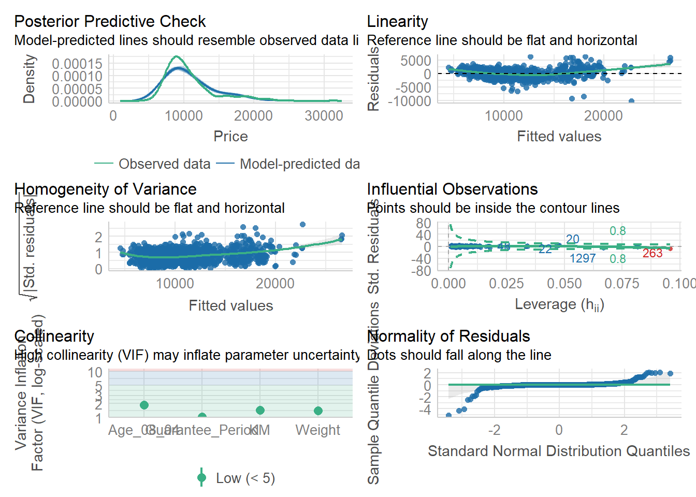

pacman::p_load(ggstatsplot, tidyverse) Hands-on Exercise 4b: Visual Statistical Analysis
1 Visual Statistical Analysis with ggstatsplot
In this section, we will use the following our R packages.
tidyverse, a family of R packages for data science process,
ggstatsplot, a ggplot2 extension created graphics with details from statistical tests included in the information-rich plots themselves.
To provide alternative statistical inference methods by default.
To follow best practices for statistical reporting. For all statistical tests reported in the plots, the default template abides by the APA gold standard for statistical reporting
2 Getting Started
The code chunk below uses p_load() of pacman package to check if these packages are installed in the computer and load them onto your working R environment.
The code chunk below imports exam_data.csv into R environment by using read_csv() function of readr package.
exam <- read.csv("data/Exam_data.csv")The code chunk below uses stat()to summarize the data.
stat(exam) ID CLASS GENDER RACE ENGLISH MATHS SCIENCE
1 Student321 3I Male Malay 21 9 15
2 Student305 3I Female Malay 24 22 16
3 Student289 3H Male Chinese 26 16 16
4 Student227 3F Male Chinese 27 77 31
5 Student318 3I Male Malay 27 11 25
6 Student306 3I Female Malay 31 16 16
7 Student313 3I Male Chinese 31 21 25
8 Student316 3I Male Malay 31 18 27
9 Student312 3I Male Malay 33 19 15
10 Student297 3H Male Indian 34 49 37
11 Student314 3I Male Chinese 34 39 42
12 Student278 3H Female Malay 36 35 22
13 Student302 3I Female Chinese 36 23 32
14 Student323 3I Male Chinese 36 36 36
15 Student296 3H Male Chinese 37 49 35
16 Student311 3I Female Chinese 38 30 45
17 Student304 3I Female Malay 39 21 21
18 Student307 3I Female Malay 39 24 35
19 Student259 3G Male Malay 40 54 26
20 Student273 3H Female Malay 40 36 24
21 Student292 3H Male Malay 40 40 31
22 Student303 3I Female Malay 40 20 32
23 Student177 3E Male Chinese 41 71 40
24 Student253 3G Male Others 41 51 37
25 Student294 3H Male Malay 41 32 26
26 Student287 3H Male Malay 42 32 27
27 Student293 3H Male Malay 42 37 23
28 Student290 3H Male Malay 43 30 31
29 Student295 3H Male Indian 43 35 38
30 Student319 3I Male Indian 43 25 24
31 Student309 3I Female Malay 44 24 24
32 Student315 3I Male Malay 44 19 35
33 Student288 3H Male Chinese 45 50 27
34 Student301 3I Female Malay 45 32 30
35 Student248 3G Male Chinese 46 55 17
36 Student277 3H Female Malay 46 31 34
37 Student171 3E Female Chinese 48 56 49
38 Student324 3I Male Chinese 48 41 41
39 Student258 3G Male Malay 49 30 32
40 Student282 3H Female Chinese 49 44 19
41 Student298 3H Male Malay 49 41 32
42 Student317 3I Male Malay 49 34 31
43 Student276 3H Female Malay 50 35 40
44 Student286 3H Male Malay 50 56 36
45 Student310 3I Female Malay 50 58 50
46 Student215 3F Female Chinese 51 74 54
47 Student200 3F Female Chinese 52 71 47
48 Student202 3F Female Chinese 52 55 39
49 Student264 3G Male Indian 52 42 16
50 Student322 3I Male Malay 52 58 41
51 Student117 3C Male Chinese 53 90 46
52 Student199 3F Female Chinese 53 77 57
53 Student251 3G Male Chinese 53 51 45
54 Student320 3I Male Malay 53 25 48
55 Student188 3E Male Chinese 54 65 40
56 Student231 3F Male Chinese 54 78 60
57 Student255 3G Male Chinese 54 54 32
58 Student262 3G Male Malay 54 59 45
59 Student265 3G Male Chinese 54 38 46
60 Student271 3H Female Chinese 54 52 52
61 Student272 3H Female Malay 54 33 37
62 Student279 3H Female Indian 54 48 53
63 Student283 3H Female Malay 55 43 45
64 Student284 3H Female Chinese 55 56 45
65 Student241 3G Female Malay 56 52 57
66 Student261 3G Male Malay 56 37 34
67 Student291 3H Male Malay 56 44 46
68 Student299 3H Male Malay 56 52 59
69 Student198 3F Female Chinese 57 74 62
70 Student201 3F Female Chinese 57 67 67
71 Student212 3F Female Malay 57 63 55
72 Student226 3F Male Malay 57 75 58
73 Student240 3G Female Malay 57 49 45
74 Student266 3G Female Chinese 57 47 64
75 Student274 3H Female Malay 57 50 39
76 Student179 3E Male Chinese 58 69 57
77 Student185 3E Male Malay 58 78 66
78 Student224 3F Male Malay 58 64 60
79 Student280 3H Female Malay 58 47 47
80 Student281 3H Female Indian 58 40 46
81 Student163 3E Female Malay 59 58 36
82 Student225 3F Male Malay 59 74 45
83 Student115 3C Male Chinese 60 72 52
84 Student203 3F Female Chinese 60 75 61
85 Student246 3G Female Malay 60 43 44
86 Student263 3G Male Indian 60 68 63
87 Student082 3C Female Chinese 61 85 68
88 Student114 3C Male Chinese 61 79 50
89 Student119 3D Female Chinese 61 62 49
90 Student191 3E Male Chinese 61 88 52
91 Student206 3F Female Malay 61 62 55
92 Student219 3F Male Malay 61 63 60
93 Student244 3G Female Malay 61 58 46
94 Student269 3H Female Chinese 61 52 46
95 Student186 3E Male Chinese 62 85 74
96 Student189 3E Male Chinese 62 58 59
97 Student210 3F Female Chinese 62 74 68
98 Student221 3F Male Malay 62 58 58
99 Student245 3G Female Malay 62 45 52
100 Student260 3G Male Malay 62 79 57
101 Student085 3C Female Chinese 63 64 49
102 Student106 3C Male Chinese 63 84 44
103 Student148 3D Male Chinese 63 74 63
104 Student220 3F Male Chinese 63 71 64
105 Student235 3G Female Malay 63 50 48
106 Student270 3H Female Chinese 63 70 53
107 Student285 3H Female Chinese 63 46 50
108 Student300 3H Female Others 63 67 65
109 Student141 3D Male Indian 64 78 76
110 Student157 3E Female Chinese 64 66 67
111 Student175 3E Male Malay 64 66 54
112 Student176 3E Male Chinese 64 64 49
113 Student184 3E Male Malay 64 65 63
114 Student209 3F Female Malay 64 69 55
115 Student252 3G Male Chinese 64 36 41
116 Student275 3H Female Malay 64 54 54
117 Student098 3C Male Chinese 65 90 63
118 Student105 3C Male Chinese 65 80 73
119 Student155 3D Male Chinese 65 68 66
120 Student156 3E Female Chinese 65 78 65
121 Student167 3E Female Malay 65 79 51
122 Student228 3F Male Malay 65 65 60
123 Student234 3G Female Malay 65 49 41
124 Student238 3G Female Chinese 65 81 78
125 Student133 3D Female Malay 66 76 56
126 Student162 3E Female Malay 66 61 56
127 Student180 3E Male Chinese 66 71 72
128 Student197 3F Female Chinese 66 72 61
129 Student208 3F Female Malay 66 64 69
130 Student213 3F Female Malay 66 70 61
131 Student218 3F Male Chinese 66 63 64
132 Student229 3F Male Chinese 66 80 74
133 Student242 3G Female Chinese 66 63 50
134 Student256 3G Male Malay 66 64 61
135 Student112 3C Male Chinese 67 73 54
136 Student140 3D Male Chinese 67 86 76
137 Student183 3E Male Malay 67 72 63
138 Student211 3F Female Others 67 70 68
139 Student223 3F Male Malay 67 68 59
140 Student232 3F Female Chinese 67 95 84
141 Student233 3F Female Chinese 67 80 56
142 Student243 3G Female Malay 67 53 44
143 Student249 3G Male Chinese 67 81 74
144 Student254 3G Male Chinese 67 74 59
145 Student026 3A Male Chinese 68 87 66
146 Student097 3C Male Malay 68 63 50
147 Student116 3C Male Chinese 68 79 77
148 Student145 3D Male Chinese 68 83 65
149 Student159 3E Female Malay 68 74 58
150 Student190 3E Male Others 68 67 59
151 Student207 3F Female Malay 68 69 65
152 Student250 3G Male Chinese 68 60 59
153 Student268 3H Female Malay 68 61 64
154 Student204 3F Female Malay 69 75 54
155 Student216 3F Female Chinese 69 67 69
156 Student247 3G Female Chinese 69 62 58
157 Student257 3G Male Malay 69 44 50
158 Student021 3A Male Chinese 70 90 72
159 Student126 3D Female Others 70 70 68
160 Student192 3E Male Malay 70 66 63
161 Student205 3F Female Malay 70 70 58
162 Student230 3F Male Malay 70 84 73
163 Student237 3G Female Malay 70 63 42
164 Student048 3B Female Chinese 71 82 72
165 Student096 3C Male Malay 71 65 57
166 Student100 3C Male Chinese 71 82 72
167 Student103 3C Male Chinese 71 75 52
168 Student131 3D Female Others 71 75 74
169 Student161 3E Female Malay 71 79 68
170 Student173 3E Female Chinese 71 89 83
171 Student182 3E Male Chinese 71 77 72
172 Student217 3F Male Chinese 71 74 68
173 Student267 3G Female Chinese 71 63 58
174 Student020 3A Female Chinese 72 91 77
175 Student073 3B Male Chinese 72 83 69
176 Student079 3C Female Chinese 72 60 37
177 Student132 3D Female Chinese 72 71 61
178 Student136 3D Male Chinese 72 96 77
179 Student147 3D Male Chinese 72 79 79
180 Student151 3D Male Chinese 72 74 78
181 Student168 3E Female Malay 72 52 55
182 Student025 3A Male Chinese 73 91 74
183 Student046 3B Female Chinese 73 65 75
184 Student087 3C Female Chinese 73 85 71
185 Student089 3C Female Chinese 73 74 68
186 Student090 3C Female Chinese 73 73 69
187 Student094 3C Female Chinese 73 69 62
188 Student099 3C Male Chinese 73 79 74
189 Student111 3C Male Malay 73 66 53
190 Student118 3D Female Chinese 73 81 65
191 Student120 3D Female Chinese 73 72 70
192 Student122 3D Female Chinese 73 77 76
193 Student143 3D Male Chinese 73 74 72
194 Student146 3D Male Chinese 73 79 66
195 Student150 3D Male Malay 73 85 71
196 Student153 3D Male Chinese 73 83 74
197 Student170 3E Female Indian 73 83 57
198 Student174 3E Male Malay 73 75 69
199 Student181 3E Male Chinese 73 77 68
200 Student214 3F Female Chinese 73 82 62
201 Student088 3C Female Chinese 74 88 72
202 Student101 3C Male Chinese 74 75 80
203 Student113 3C Male Chinese 74 78 71
204 Student137 3D Male Chinese 74 86 77
205 Student139 3D Male Chinese 74 87 65
206 Student158 3E Female Chinese 74 82 75
207 Student169 3E Female Chinese 74 59 61
208 Student236 3G Female Chinese 74 60 46
209 Student067 3B Male Chinese 75 84 80
210 Student074 3B Male Chinese 75 83 75
211 Student093 3C Female Chinese 75 85 71
212 Student110 3C Male Malay 75 76 72
213 Student154 3D Male Chinese 75 58 67
214 Student178 3E Male Chinese 75 68 64
215 Student195 3F Female Chinese 75 70 73
216 Student011 3A Female Chinese 76 91 74
217 Student024 3A Male Chinese 76 88 72
218 Student035 3A Male Chinese 76 89 71
219 Student083 3C Female Malay 76 75 63
220 Student124 3D Female Chinese 76 67 53
221 Student165 3E Female Chinese 76 82 67
222 Student166 3E Female Chinese 76 80 75
223 Student172 3E Female Chinese 76 71 62
224 Student187 3E Male Chinese 76 88 71
225 Student053 3B Female Chinese 77 79 77
226 Student054 3B Female Chinese 77 85 78
227 Student063 3B Female Chinese 77 69 72
228 Student068 3B Male Chinese 77 93 82
229 Student072 3B Male Chinese 77 79 76
230 Student104 3C Male Chinese 77 91 72
231 Student109 3C Male Malay 77 81 69
232 Student125 3D Female Chinese 77 85 78
233 Student129 3D Female Chinese 77 80 66
234 Student134 3D Female Chinese 77 74 67
235 Student142 3D Male Chinese 77 89 80
236 Student164 3E Female Malay 77 54 68
237 Student194 3E Female Chinese 77 78 72
238 Student196 3F Female Chinese 77 80 69
239 Student222 3F Male Malay 77 77 72
240 Student006 3A Female Chinese 78 75 70
241 Student032 3A Male Malay 78 85 84
242 Student045 3B Female Malay 78 83 65
243 Student070 3B Male Malay 78 95 70
244 Student092 3C Female Chinese 78 86 84
245 Student108 3C Male Chinese 78 78 70
246 Student138 3D Male Indian 78 78 65
247 Student149 3D Male Malay 78 83 79
248 Student152 3D Male Others 78 61 74
249 Student160 3E Female Malay 78 71 49
250 Student019 3A Female Chinese 79 77 70
251 Student023 3A Male Chinese 79 94 79
252 Student028 3A Male Chinese 79 90 80
253 Student065 3B Female Chinese 79 91 85
254 Student069 3B Male Chinese 79 86 81
255 Student080 3C Female Malay 79 73 58
256 Student086 3C Female Malay 79 79 69
257 Student091 3C Female Chinese 79 82 61
258 Student095 3C Female Chinese 79 86 75
259 Student107 3C Male Chinese 79 92 61
260 Student144 3D Male Chinese 79 86 77
261 Student004 3A Female Chinese 80 89 73
262 Student034 3A Male Chinese 80 88 78
263 Student055 3B Female Chinese 80 89 85
264 Student060 3B Female Malay 80 79 77
265 Student078 3B Female Chinese 80 97 83
266 Student081 3C Female Chinese 80 76 69
267 Student239 3G Female Malay 80 56 52
268 Student005 3A Female Chinese 81 79 62
269 Student052 3B Female Chinese 81 85 82
270 Student062 3B Female Malay 81 87 81
271 Student102 3C Male Chinese 81 78 70
272 Student121 3D Female Malay 81 82 71
273 Student123 3D Female Chinese 81 74 70
274 Student128 3D Female Others 81 76 70
275 Student008 3A Female Chinese 82 78 82
276 Student047 3B Female Chinese 82 86 78
277 Student058 3B Female Malay 82 81 65
278 Student064 3B Female Malay 82 87 78
279 Student130 3D Female Malay 82 80 67
280 Student014 3A Female Chinese 83 93 84
281 Student018 3A Female Indian 83 90 83
282 Student029 3A Male Chinese 83 87 89
283 Student050 3B Female Chinese 83 89 84
284 Student066 3B Male Chinese 83 97 88
285 Student075 3B Male Chinese 83 80 79
286 Student084 3C Female Chinese 83 76 56
287 Student127 3D Female Malay 83 81 60
288 Student003 3A Female Chinese 84 91 82
289 Student037 3A Male Chinese 84 91 74
290 Student041 3B Female Chinese 84 85 78
291 Student043 3B Female Chinese 84 97 88
292 Student051 3B Female Chinese 84 83 70
293 Student057 3B Female Malay 84 90 80
294 Student027 3A Male Chinese 85 98 80
295 Student031 3A Male Chinese 85 91 78
296 Student044 3B Female Chinese 85 92 84
297 Student049 3B Female Chinese 85 86 83
298 Student056 3B Female Chinese 85 86 77
299 Student059 3B Female Malay 85 74 75
300 Student061 3B Female Malay 85 87 79
301 Student076 3B Male Chinese 85 85 82
302 Student135 3D Female Chinese 85 86 81
303 Student001 3A Female Chinese 86 90 85
304 Student033 3A Male Chinese 86 95 84
305 Student038 3A Male Chinese 86 91 87
306 Student071 3B Male Chinese 86 91 88
307 Student077 3B Male Chinese 86 91 88
308 Student009 3A Female Chinese 87 95 82
309 Student022 3A Male Chinese 87 90 91
310 Student042 3B Female Indian 87 92 81
311 Student007 3A Female Chinese 88 91 86
312 Student030 3A Male Chinese 88 89 83
313 Student040 3A Female Malay 88 87 85
314 Student039 3A Male Chinese 89 97 90
315 Student002 3A Female Chinese 90 93 89
316 Student013 3A Female Chinese 90 97 90
317 Student017 3A Female Chinese 90 85 89
318 Student016 3A Female Chinese 91 95 91
319 Student015 3A Female Others 92 90 87
320 Student010 3A Female Chinese 93 93 90
321 Student012 3A Female Chinese 93 97 84
322 Student036 3A Male Chinese 96 99 962.1 One-sample test: gghistostats() method
In the code chunk below, gghistostats() is used to to build an visual of one-sample test on English scores.
set.seed(1234)
gghistostats(data = exam,
x = ENGLISH,
type = "bayes",
test.value = 60,
xlab = "English scores")
2.2 Unpacking the Bayes Factor
A Bayes factor is the ratio of the likelihood of one particular hypothesis to the likelihood of another. It can be interpreted as a measure of the strength of evidence in favor of one theory among two competing theories.
That is because the Bayes factor gives us a way to evaluate the data in favor of a null hypothesis, and to use external information to do so. It tells us what the weight of the evidence is in favor of a given hypothesis.
When we are comparing two hypotheses, H1 (the alternate hypothesis) and H0 (the null hypothesis), the Bayes Factor is often written as B10. It can be defined mathematically as
The Schwarz criterion is one of the easiest ways to calculate rough approximation of the Bayes Factor.
2.3 How to interpret Bayes Factor
A Bayes Factor can be any positive number. One of the most common interpretations is this one—first proposed by Harold Jeffereys (1961) and slightly modified by Lee and Wagenmakers in 2013.
2.4 Two-sample mean test: ggbetweenstats()
In the code chunk below, ggbetweenstats() is used to build a visual for two-sample mean test of Maths scores by gender.
ggbetweenstats(data = exam,
x = GENDER,
y = MATHS,
type = "np",
messages = FALSE)
2.5 Oneway ANOVA Test: ggbetweenstats() method
In the code chunk below, ggbetweenstats() is used to build a visual for One-way ANOVA test on English score by race.
ggbetweenstats(data = exam,
x = RACE,
y = ENGLISH,
type = "p",
mean.ci = TRUE,
pairwise.comparisons = TRUE,
pairwise.display = "s",
p.adjust.method = "fdr",
messages = FALSE)
“ns” → only non-significant
“s” → only significant
“all” → everything
2.6 Significant Test of Correlation: ggscatterstats()
In the code chunk below, ggscatterstats() is used to build a visual for Significant Test of Correlation between Maths scores and English scores.
ggscatterstats(data = exam,
x = MATHS,
y = ENGLISH,
marginal = FALSE)
2.7 Significant Test of Association (Depedence) : ggbarstats() methods
In the code chunk below, the Maths scores is binned into a 4-class variable by using cut().
exam1 <- exam %>%
mutate(MATHS_bins =
cut(MATHS,
breaks = c(0,60,75,85,100)))In this code chunk below ggbarstats() is used to build a visual for Significant Test of Association
ggbarstats(exam1,
x = MATHS_bins,
y = GENDER)
3 Visualizing Models
In this section, we will use parameters package to learn how to visualize model diagnostic and model parameters.
Toyota Corolla case study will be used. The purpose of study is to build a model to discover factors affecting prices of used-cars by taking into consideration a set of explanatory variables.
4 Getting Started
The code chunk below uses p_load() of pacman package to check if these packages are installed in the computer and load them onto your working R environment.
pacman::p_load(readxl, performance, parameters, see, ggplot2) In the code chunk below, read_xls() of readxl package is used to import the data worksheet of ToyotaCorolla.xls workbook into R.
car_resale <- read_xls("data/ToyotaCorolla.xls",
"data")The code chunk below uses stat()to summarize the data.
stat(car_resale)# A tibble: 1,436 × 38
Id Model Price Age_08_04 Mfg_Month Mfg_Year KM Quarterly_Tax Weight
<dbl> <chr> <dbl> <dbl> <dbl> <dbl> <dbl> <dbl> <dbl>
1 81 TOYOTA … 18950 25 8 2002 20019 100 1180
2 1 TOYOTA … 13500 23 10 2002 46986 210 1165
3 2 TOYOTA … 13750 23 10 2002 72937 210 1165
4 3 TOYOTA… 13950 24 9 2002 41711 210 1165
5 4 TOYOTA … 14950 26 7 2002 48000 210 1165
6 5 TOYOTA … 13750 30 3 2002 38500 210 1170
7 6 TOYOTA … 12950 32 1 2002 61000 210 1170
8 7 TOYOTA… 16900 27 6 2002 94612 210 1245
9 8 TOYOTA … 18600 30 3 2002 75889 210 1245
10 44 TOYOTA … 16950 27 6 2002 110404 234 1255
# ℹ 1,426 more rows
# ℹ 29 more variables: Guarantee_Period <dbl>, HP_Bin <chr>, CC_bin <chr>,
# Doors <dbl>, Gears <dbl>, Cylinders <dbl>, Fuel_Type <chr>, Color <chr>,
# Met_Color <dbl>, Automatic <dbl>, Mfr_Guarantee <dbl>,
# BOVAG_Guarantee <dbl>, ABS <dbl>, Airbag_1 <dbl>, Airbag_2 <dbl>,
# Airco <dbl>, Automatic_airco <dbl>, Boardcomputer <dbl>, CD_Player <dbl>,
# Central_Lock <dbl>, Powered_Windows <dbl>, Power_Steering <dbl>, …4.1 Multiple Regression Model using lm()
The code chunk below is used to calibrate a multiple linear regression model by using lm() of Base Stats of R.
model <- lm(Price ~ Age_08_04 + Mfg_Year + KM +
Weight + Guarantee_Period, data = car_resale)
model
Call:
lm(formula = Price ~ Age_08_04 + Mfg_Year + KM + Weight + Guarantee_Period,
data = car_resale)
Coefficients:
(Intercept) Age_08_04 Mfg_Year KM
-2.637e+06 -1.409e+01 1.315e+03 -2.323e-02
Weight Guarantee_Period
1.903e+01 2.770e+01 4.2 Model Diagnostic: checking for multicolinearity
In the code chunk, check_collinearity() of performance package.
check_collinearity(model)# Check for Multicollinearity
Low Correlation
Term VIF VIF 95% CI Increased SE Tolerance Tolerance 95% CI
KM 1.46 [ 1.37, 1.57] 1.21 0.68 [0.64, 0.73]
Weight 1.41 [ 1.32, 1.51] 1.19 0.71 [0.66, 0.76]
Guarantee_Period 1.04 [ 1.01, 1.17] 1.02 0.97 [0.86, 0.99]
High Correlation
Term VIF VIF 95% CI Increased SE Tolerance Tolerance 95% CI
Age_08_04 31.07 [28.08, 34.38] 5.57 0.03 [0.03, 0.04]
Mfg_Year 31.16 [28.16, 34.48] 5.58 0.03 [0.03, 0.04]check_c <- check_collinearity(model)
plot(check_c)
4.3 Model Diagnostic: checking normality assumption
In the code chunk, check_normality() of performance package is used.
model1 <- lm(Price ~ Age_08_04 + KM +
Weight + Guarantee_Period, data = car_resale)
check_n <- check_normality(model1)
plot(check_n, type ="qq")
4.4 Model Diagnostic: Check model for homogeneity of variances
In the code chunk, check_heteroscedasticity() of performance package is used.
check_h <- check_heteroscedasticity(model1)
plot(check_h)
4.5 Model Diagnostic: Complete check
We can also perform the complete by using check_model().
check_model(model1)
4.6 Visualising Regression Parameters: see methods
In the code chunk, plot() of see package and parameters() of parameters package is used to visualize the parameters of a regression model.
plot(parameters(model1))
4.7 Visualizing Regression Parameters: ggcoefstats() methods
In the code chunk, ggcoefstats() of ggstatsplot package is used to visualize the parameters of a regression model.
ggcoefstats(model1,
output = "plot")